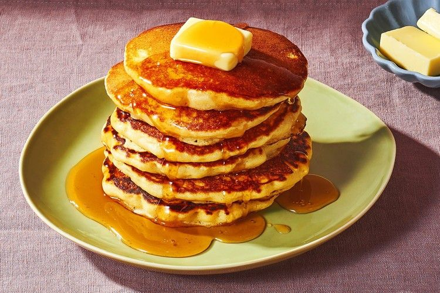

Pancakes

Description
A pancake (or hotcake, griddlecake, or flapjack) is a flat cake, often thin and round, prepared from a starch-based batter that may contain eggs, milk and butter and cooked on a hot surface such as a griddle or frying pan, often frying with oil or butter. It is a type of batter bread. Archaeological evidence suggests that pancakes were probably eaten in prehistoric societies.
Ingredients
- Milk - 1.5 cups
- Egg(1)
- All purpose flour - 2 cups
- Granulated sugar - 1/4 cup
- Salt - 1 tsp
- Baking soda - 1/4 tsp
- Baking powder - 1 tbsp
- Melted butter - 2 tbsp
Method
- In a small bowl, whisk together egg and milk.
- In a separate bowl, whisk and combine all-purpose flour with granulated sugar, salt, baking soda, and baking powder.
- Mix the dry ingredients with the wet ingredients while constantly whisking.
- While whisking add in melted unsalted butter. Whisk until combined. Rest for 5 minutes.
- Preheat a nonstick skillet over medium. Spray with spray oil or unsalted butter.
- Once hot spoon ¼” dollops of the pancake batter. Cook for 2-3 minutes or until golden brown on the bottom.
- Flip and cook for an additional 2-3 minutes. Repeat with the rest of the batter.
- Top with butter and drizzle with maple syrup to serve.